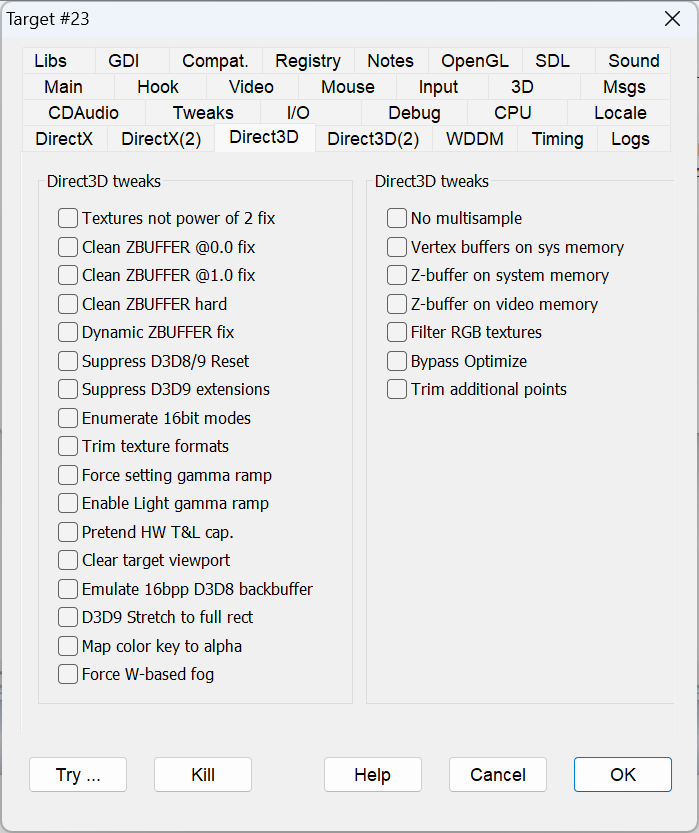

|
Textures not power of 2 fix |
NOPOWER2FIX |
Some games don't check properly whether the hardware can properly manage textures whose sizes are not a power of 2 (e.g., 16, 32, 64, 128 bits). If textures of a different size are processed by a hardware without this capability, you get diagonal effects on the rendered image. This option fixes the problem. |
|
Clean ZBUFFER @0.0 fix |
ZBUFFER0CLEAN |
Some games don't clear the z-buffer between frames properly, producing incorrect surface z-ordering and other issues. This flag fixes the problem. For an example, see Examples > SnowBoard: Racer. |
|
Clean ZBUFFER @1.0 fix |
ZBUFFERCLEAN |
Some games don't clear the z-buffer between frames properly, producing incorrect surface z-ordering and other issues. This flag fixes the problem. It is similar to ZBUFFER0CLEAN, but it works in different contexts. |
|
Clean ZBUFFER hard |
ZBUFFERHARDCLEAN |
Fixes z-buffer problems in "Star Wars Episode I: Racer", producing the same effect as the "Clean ZBUFFER @1.0" flag but using quite a different approach. It is called "hard" because it is a little "rude", you're not supposed to write directly on top of the z-buffer surface, but it works. |
|
Dynamic ZBUFFER fix |
DYNAMICZCLEAN |
Fixes some of the rendering problems in "Tonic Trouble". |
|
Suppress D3D8/9 Reset |
NOD3DRESET |
Suppresses the Direct3D reset operation. |
|
Suppress d3d9 extensions |
SUPPRESSD3DEXT |
"D3D9.dll" comes in different versions depending on the platform: on older Windows releases, it exports the Direct3DCreate API, while in more recent versions there are many further exported calls. This flag suppresses the additional entries. |
|
Enumerate 16bit modes |
ENUM16BITMODES |
On Windows 10 or Windows 11, the list of available video modes (see IDirectDraw8/9::EnumAdapterModes) may not include those with color depths lower than 32bpp while no fullscreen programs are running (known as "desktop composition mode"). This may impact games that need 8 or 16-bit color depth. This flag forces the inclusion of modes with 16-bit color depth. This option may help when a Direct3D8/9 program running on Windows 10 or Windows 11 lacks the proper video mode and terminates. |
|
Trim texture formats |
TRIMTEXTUREFORMATS |
Emulates the "DirectXTrimTextureFormats" shim as closely as possible. Trims the ZBufferFormats so that no more than 3 entries are enumerated, in growing color depth order, and 32-bit formats are omitted. For an example, see Examples > Heavy Gear 2. |
|
Force setting gamma ramp |
FORCED3DGAMMARAMP |
Enables gamma ramp control in the windowed game, although changing the whole desktop. Makes "The Elder Scrolls III: Morrowind" more visible. |
|
Enable Light gamma ramp |
LIGHTGAMMARAMP |
Enables gamma ramp correction in Direct3D lights. See Gamma control. |
|
Pretend HW T&L cap. |
TRANSFORMANDLIGHT |
Pretends that the video card has hardware transform and lighting capabilities. This is not necessary since DirectX can emulate T&L by software for the game, but some games make a check for this capability and refuse to run if it is missing. |
|
Clear target viewport |
CLEARTARGET |
Forcefully invokes the Direct3D "Clean" method on the target surface every time the "BeginScene" method is invoked. Most games already do this, but some omit it because there were no undesired effects on the computers that were in use at the time. Running these games in windowed mode on modern platforms may show trails of previous frames. This flag cleans up the graphical artifacts from old frames, resolving this issue. |
|
Emulate 16bpp D3D8 backbuffer |
D3D8BACK16 |
D3D8 16bpp backbuffer emulation on 32bpp color depth. This fixes "Dangerous Waters" on 32bpp Windows 8 to Windows 11 systems. |
|
D3D9 Stretch to full rect |
STRETCHFULLRECT |
Makes IDirect3DDevice9::StretchRect blit to the full destination rectangle area, thus filling the window client area. |
|
Map color key to alpha |
COLORKEYTOALPHA |
The flag maps the pixel's transparent color key value to the alpha channel. |
|
Force W-based fog |
FORCEWBASEDFOG |
In case the current fog request is not supported, the flag sets the 3D transformation matrix in such a way that W-based fog is enabled. |
|
No multisample |
NOMULTISAMPLE |
Disables the multi-sample capability in Direct3D8/9 device creation. |
|
Vertex buffers on sys memory |
FORCEVBUFONSYSMEM |
Forces the vertex buffers to be created on system memory. |
|
Z-buffer on system memory |
ZBUFONSYSMEMORY |
pretends that the ZBUFFER has DDSCAPS_SYSTEMMEMORY capability to avoid the D3DERR_ZBUFF_NEEDS_SYSTEMMEMORY error |
|
Z-buffer on video memory |
ZBUFONVIDMEMORY |
pretends that the ZBUFFER has DDSCAPS_VIDEOMEMORY capability to avoid the D3DERR_ZBUFF_NEEDS_VIDEOMEMORY error |
|
Filter RGB textures |
FILTERRGBTEXTURES |
Some games may chose an incorrect texture format for the rendering, typically with untested video cards that expose unusual capabilities. This is the case for "Competitions at Rosemond Hill" that running on some nVidia video cards select a bump-mapping texture format instead of a proper RGB texture format. The flag exclude from the enumeration all texture formats that are not RGB type and fixes this game bug. |